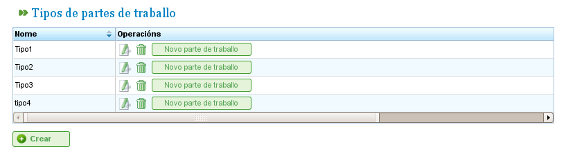

Werkrapporten
Werkrapporten maken het mogelijk de uren te bewaken die resources besteden aan de taken waaraan zij zijn toegewezen.
Het programma stelt gebruikers in staat nieuwe formulieren te configureren voor het invoeren van bestede uren, waarbij de velden worden opgegeven die in deze formulieren moeten verschijnen. Dit maakt het mogelijk om rapporten op te nemen van taken die door medewerkers zijn uitgevoerd en de activiteit van medewerkers te bewaken.
Voordat gebruikers vermeldingen voor resources kunnen toevoegen, moeten ze ten minste één type werkrapport definiëren. Dit type definieert de structuur van het rapport, inclusief alle rijen die eraan worden toegevoegd. Gebruikers kunnen zoveel typen werkrapporten aanmaken als nodig is binnen het systeem.
Typen werkrapporten
Een werkrapport bestaat uit een reeks velden die gemeenschappelijk zijn voor het hele rapport en een set werkrapportregels met specifieke waarden voor de in elke rij gedefinieerde velden. Zo zijn resources en taken gemeenschappelijk voor alle rapporten. Er kunnen echter andere nieuwe velden zijn, zoals "incidenten," die niet vereist zijn in alle rapporttypen.
Gebruikers kunnen verschillende typen werkrapporten configureren zodat een bedrijf zijn rapporten kan ontwerpen om aan zijn specifieke behoeften te voldoen:

Typen werkrapporten
Het beheer van typen werkrapporten stelt gebruikers in staat deze typen te configureren en nieuwe tekstvelden of optionele tags toe te voegen. Op het eerste tabblad voor het bewerken van typen werkrapporten is het mogelijk het type te configureren voor de verplichte attributen (of ze van toepassing zijn op het hele rapport of worden opgegeven op regelniveau) en nieuwe optionele velden toe te voegen.
De verplichte velden die in alle werkrapporten moeten verschijnen, zijn als volgt:
- Naam en code: Identificatievelden voor de naam van het type werkrapport en de bijbehorende code.
- Datum: Veld voor de datum van het rapport.
- Resource: Medewerker of machine die op het rapport of de werkrapportregel verschijnt.
- Orderelement: Code voor het orderelement waaraan het uitgevoerde werk wordt toegeschreven.
- Uurbeheer: Bepaalt het te gebruiken beleid voor uurattributie, dat kan zijn:
- Volgens toegewezen uren: Uren worden toegeschreven op basis van de toegewezen uren.
- Volgens begin- en eindtijden: Uren worden berekend op basis van de begin- en eindtijden.
- Volgens het aantal uren en begin- en eindbereik: Afwijkingen zijn toegestaan en het aantal uren heeft prioriteit.
Gebruikers kunnen nieuwe velden aan de rapporten toevoegen:
- Tagtype: Gebruikers kunnen het systeem verzoeken een tag te tonen bij het invullen van het werkrapport. Bijvoorbeeld het type clienttag, als de gebruiker de klant voor wie het werk is uitgevoerd in elk rapport wil invoeren.
- Vrije velden: Velden waar tekst vrij kan worden ingevoerd in het werkrapport.

Een type werkrapport met gepersonaliseerde velden aanmaken
Gebruikers kunnen datum-, resource- en orderelementen configureren om te verschijnen in de koptekst van het rapport, wat betekent dat ze van toepassing zijn op het hele rapport, of ze kunnen aan elk van de rijen worden toegevoegd.
Ten slotte kunnen nieuwe aanvullende tekstvelden of tags aan de bestaande worden toegevoegd, in de koptekst van het werkrapport of in elke regel, door respectievelijk de velden "Aanvullende tekst" en "Tagtype" te gebruiken. Gebruikers kunnen de volgorde configureren waarin deze elementen moeten worden ingevoerd op het tabblad "Beheer van aanvullende velden en tags."
Lijst van werkrapporten
Zodra het formaat van de in het systeem op te nemen rapporten is geconfigureerd, kunnen gebruikers de gegevens invoeren in het gemaakte formulier volgens de structuur die is gedefinieerd in het bijbehorende type werkrapport. Daarvoor moeten gebruikers de volgende stappen volgen:
- Klik op de knop "Nieuw werkrapport" die gekoppeld is aan het gewenste rapport uit de lijst van typen werkrapporten.
- Het programma toont vervolgens het rapport op basis van de configuraties die zijn gegeven voor het type. Zie de volgende afbeelding.
Structuur van het werkrapport op basis van type
- Selecteer alle velden die voor het rapport worden weergegeven:
- Resource: Als de koptekst is gekozen, wordt de resource slechts één keer weergegeven. Anders moet voor elke regel van het rapport een resource worden gekozen.
- Taakcode: Code van de taak waaraan het werkrapport wordt toegewezen. Net als bij de andere velden wordt de waarde, als het veld zich in de koptekst bevindt, eenmalig ingevoerd of zo vaak als nodig is op de regels van het rapport.
- Datum: Datum van het rapport of elke regel, afhankelijk van of de koptekst of regel is geconfigureerd.
- Aantal uren: Het aantal werkuren in het project.
- Begin- en eindtijden: Begin- en eindtijden voor het werk om definitieve werkuren te berekenen. Dit veld verschijnt alleen bij de beleid voor uurattributie "Volgens begin- en eindtijden" en "Volgens het aantal uren en begin- en eindbereik."
- Type uren: Stelt gebruikers in staat het type uur te kiezen, bijv. "Normaal," "Buitengewoon," etc.
- Klik op "Opslaan" of "Opslaan en doorgaan."